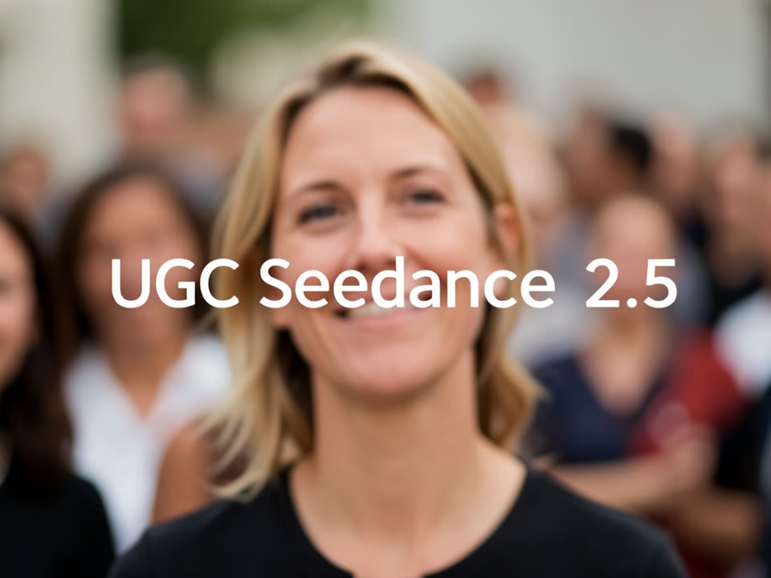
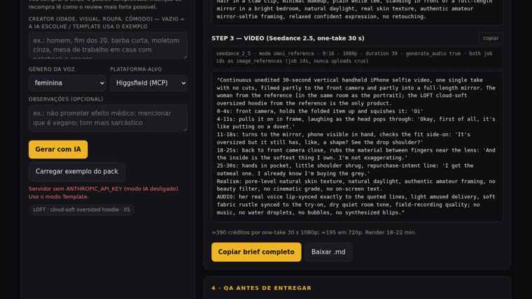
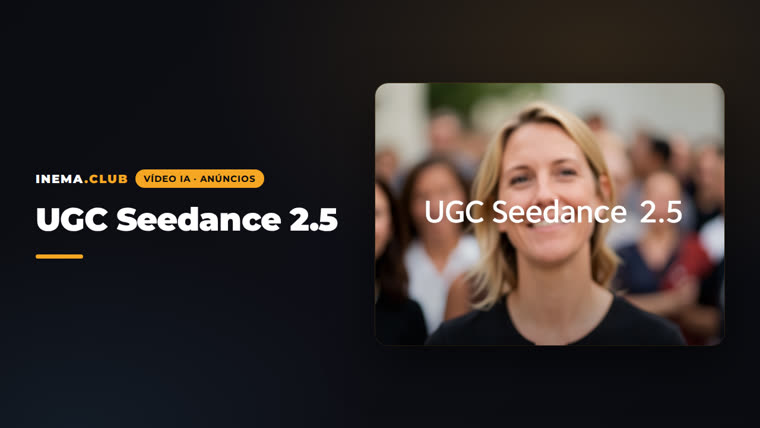

Foto do produto + retrato do creator + vídeo one-take com voz e lip-sync nativos. Você sai com os 3 prompts prontos pra colar na Magnific, no Higgsfield ou no fal.ai.

O pack (Zubair Trabzada · AI Workshop, 2026) ensina uma receita de 3 passos e 9 formatos pra anúncios que parecem gravados por uma pessoa real no celular. Este projeto transforma a receita em duas ferramentas: uma skill pro Claude Code e um gerador de brief na web.
Seedance 2.5 gera o anúncio inteiro de uma vez: mesmo rosto, mesma voz, mesmo produto, sem costura. 9:16, 1080p, áudio nativo com lip-sync.
Review, confissão na mesa, rotina noturna, unboxing, try-on, POV só mãos, teste de sabor e dois "traga seu produto" (foto ou print da loja).
Produto em quadro nos 3 primeiros segundos, bloco de realismo, toda fala entre aspas com timestamp, sons proibidos, QA em frames congelados.
Os prompts ficam em inglês (o modelo lê melhor); só as falas entre aspas vão no idioma escolhido, PT-BR por padrão. Cinco beats com timestamp pautam a atuação: 70–80 palavras faladas cabem em 30 s.
Foto e-commerce limpa, rótulo curto (marca + duas linhas). Vira a identidade do produto em todos os anúncios.
Retrato "iPhone câmera frontal, sem retoque", no cômodo, roupa e luz exatos do vídeo. O mesmo rosto serve pra uma série.
Shot list de 5 beats: hook (0–4 s), o que é (4–11 s), demo (11–18 s), resultado (18–25 s), fecho (25–30 s). Bloco de realismo e bloco de áudio.
O gerador em modo Template roda em qualquer navegador, sem servidor. A skill e o modo IA usam o que você já tem no Claude Code.
A skill roda dentro do Claude Code. O modo IA do app usa o OAuth do Claude Code por padrão, sem chave de API.
# na máquina onde o app vai rodar claude login
Só pro modo IA. O modo Template é estático.
cd app && npm install npm run dev # http://localhost:3040
Magnific (MCP, padrão), Higgsfield ou fal.ai. O app troca os cabeçalhos de parâmetro pra cada uma. Gerar custa crédito; a skill simula o custo antes.
# ferramentas de QA (opcional) ffmpeg -version
Dois caminhos pro mesmo resultado: o gerador na web (sem instalar nada) ou a skill no Claude Code (que também pode executar na Magnific).
Marca, produto em uma linha, quem compra, origem do produto (do zero, foto ou print da loja), formato (01–09), creator, idioma das falas e plataforma-alvo.
https://inematds.github.io/ugc-seedance25/app/public/ # modo Template, sem servidor # ou local, com modo IA via OAuth do Claude Code: cd app && npm install && npm run dev
Modo Template: você digita as falas nos 5 campos e o contador avisa se saiu da faixa de 70–80 palavras. Modo IA: o Claude escreve produto, creator, ações de beat, as 5 falas no idioma escolhido e 2–3 hooks alternativos.
# exemplo de fala de hook (formato 07, teste de sabor) "Todo energético diz que não sabe a remédio. Toda vez é mentira."
Cada STEP tem botão de copiar e o cabeçalho de parâmetros do alvo escolhido. "Copiar brief completo" ou "Baixar .md" leva tudo de uma vez, com a checklist de QA.
# STEP 3 na Magnific video_generate · slug bytedance-seedance-pro-2.5 · 9:16 · 1080p · duration 30 references[]: {type:'product', STEP 1} + {type:'character', STEP 2} · sem keyframes
A skill pergunta o que faltar no brief, escolhe o formato pelo produto, escreve os 3 prompts e salva um brief.md. Só executa na Magnific se você pedir, e sempre com simulação de custo antes.
# instalar (symlink pro repo clonado) ln -s ~/projetos/ugc-seedance25/skill/ugc-seedance25 ~/.claude/skills/ugc-seedance25 # usar /ugc-seedance25 anúncio ugc do meu sérum, tenho a foto em ~/fotos/serum.jpg # saída: ~/projetos/output/ugc-seedance25/<slug>/brief.md
Na Magnific a skill roda simulate_cost e mostra o número antes de gerar. Depois: foto do produto, retrato do creator, rascunho em 720p, aprovação, final em 1080p. Voz em PT-BR saiu ruim? Gere no inemavox e passe como referência de áudio.
# ordem fixa
simulate_cost → STEP 1 → STEP 2 → vídeo 720p → QA → vídeo 1080p
Contact sheet 3×3 e checagem de espelho. Um produto só, no máximo duas mãos, rótulo legível e no sentido certo, rosto igual ao retrato, sem legenda embutida, produto visível antes de 3 s.
ffmpeg -y -i ad.mp4 -vf "fps=0.3,scale=360:-1,tile=3x3" contact.png ffmpeg -y -i ad.mp4 -vf hflip -c:a copy ad-fixed.mp4 # se o rótulo saiu espelhado
| # | Formato | Melhor pra | A sacada |
|---|---|---|---|
| 01 | Classic Review | sérum, hidratante, cabelo | o hook soa como meio de história, nunca começo de anúncio |
| 02 | Desk Confession | suplemento, café, produtividade | nunca cortar o beat de consumir na câmera |
| 03 | Night Routine | gadget de beleza, tech de casa | uma piada autodepreciativa no meio da demo |
| 04 | Unboxing | lançamento, embalagem premium | a caixa lacrada é o hook; revelação no meio |
| 05 | Try-On | roupa, activewear, joia | tecido toca a lente; fecho de recompra |
| 06 | Product-Only POV | cozinha, casa, papelaria | voz off casa com o que as mãos fazem |
| 07 | Taste Test | comida, bebida, snack | cético-convertido; "Espera." depois do gole |
| 08 | Bring Your Own (foto) | seu produto real | re-fotografar; nunca a foto crua no vídeo |
| 09 | Screenshot-to-POV | print de loja, sem rosto | "ignore any website interface" ou herda botões |
Formato 05 (try-on) carregado com o exemplo do pack, alvo Higgsfield: o STEP 3 sai com abertura de espelho, 5 beats, bloco de realismo e lista de sons proibidos.


Versão 1.0.0. O plano completo, com o mapeamento do pack pra Magnific e os riscos, está em PLANO.md no repo.